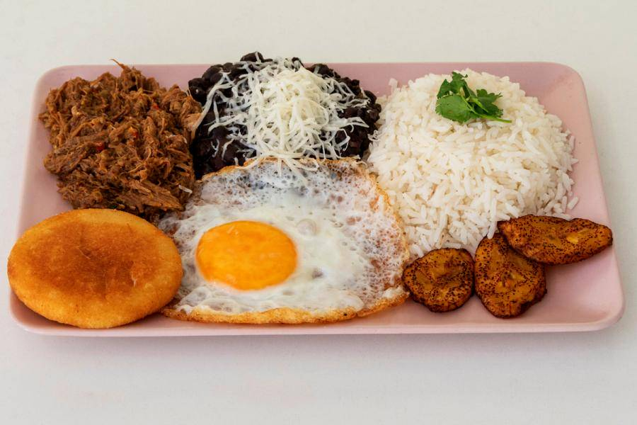
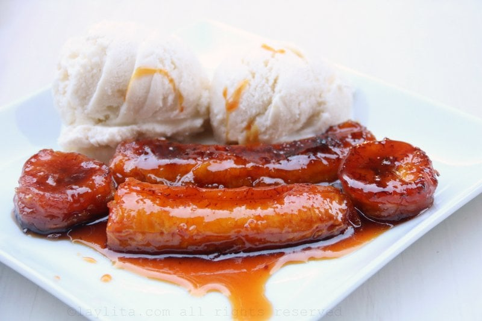
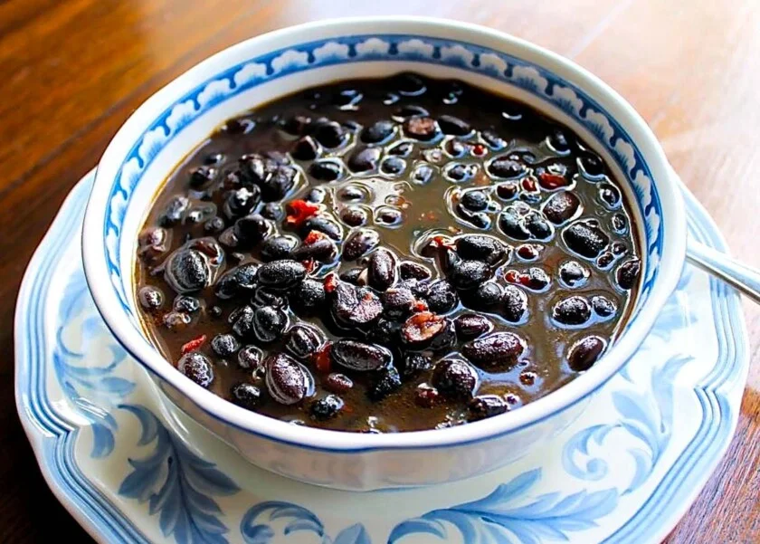

El pabellón criollo es el plato nacional de Venezuela, reconocido por su combinación de sabores, texturas y sus colores que representan la bandera nacional: arroz blanco (blancura), carne mechada (rojo), caraotas negras (negro) y tajadas de plátano maduro frito (amarillo). Este plato tradicional combina influencias indígenas, europeas y africanas, siendo un pilar fundamental de la gastronomía venezolana.

Los plátanos maduros caramelizados con panela son un postre tradicional venezolano, elaborado con plátanos maduros y panela, que se caramelizan hasta obtener un sabor dulce y agradable. Es una opción popular en las comidas tradicionales venezolanas.

La sopita de caraotas negras es una sopa tradicional venezolana hecha con caraotas negras cocidas, cebolla, ajo, pimiento rojo y especias. Es una comida reconfortante y muy popular en Venezuela, especialmente en las regiones rurales.